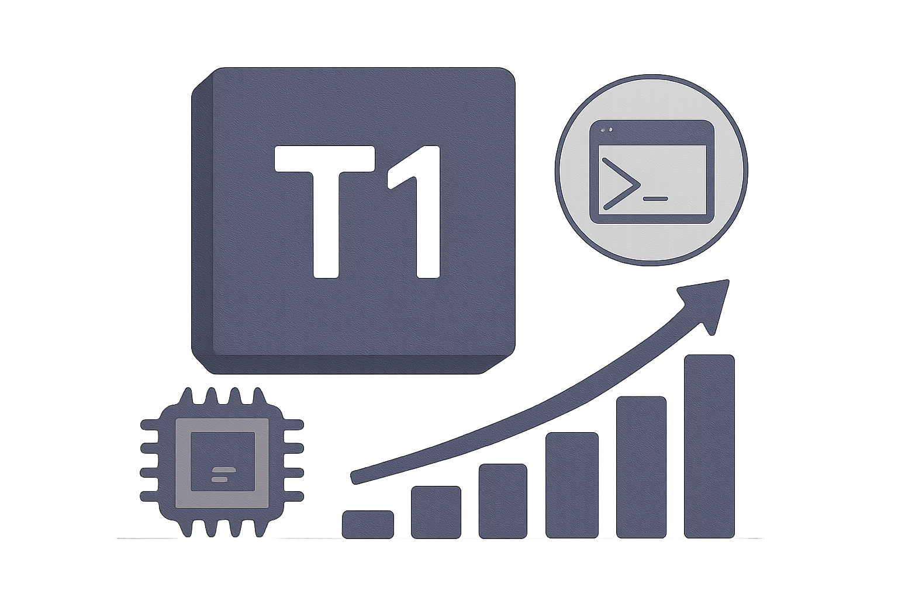

05 arXiv 게시일 2026.09.09
T1, 장기 터미널 과업 64.0% 기록

이 연구는 AI가 긴 작업을 끝까지 수행하게 만드는 방법을 다룬다. 대상은 코딩과 과학 탐구처럼 여러 단계를 거치는 과업이다. 연구진은 특히 터미널 작업에 초점을 맞췄다. 모델이 실제 셸을 다루며 결과를 검증기로 바로 확인하는 구조를 제시했다.
핵심 브리핑
이 모델은 긴 작업을 여러 단계로 처리하는 에이전트용 모델이다. 특히 터미널에서 명령을 실행하고 결과를 확인하는 과업을 겨냥했다. T1은 클라우드 샌드박스의 실제 셸을 다루며 과업당 300회 이상 도구 호출을 수행한다.
연구진은 총 122B 규모의 MoE 모델을 강화학습으로 후학습했다. 보상은 각 과업의 검증기를 실제로 실행해 계산했다. 검증기를 더 많이 통과한 경로에 더 높은 점수를 줬다.
- T1의 총 규모는 122B다
- 과업당 도구 호출은 300회 이상이다
- Terminal-Bench 2.1 해결률은 64.0%다
- 시작점이 된 기본 모델은 43.8%였다
- Long-Horizon Terminal Bench 점수는 27.9%다
연구진은 학습 안정화 방법도 함께 제시했다. TITO와 R3를 적용한 뒤 학습 시점과 추론 시점의 로그확률 차이를 0.021에서 0.013으로 줄였다고 밝혔다. 손실을 계산하는 구간에서는 토큰 드리프트를 0으로 맞췄다고 적었다.
스펙과 도입 조건
공개 발췌에는 도입에 필요한 배포 조건이 일부만 담겼다. 모델은 실제 셸을 쓰는 클라우드 샌드박스에서 동작한다. 그래서 단순한 챗봇보다 실행 환경 통제가 더 중요하다.
연구진은 학습 데이터를 벤치마크 과적합이 아닌 능력 이전으로 보이게 설계했다고 밝혔다. Terminal-Bench 2.1과 겹치지 않는 분리된 시드와 합성 과업을 썼다. 다만 라이선스와 가중치 공개 범위, 필요한 하드웨어 조건은 발췌에서 확인되지 않았다.
업계의 움직임
발췌에는 고객 도입 사례나 경쟁사 반응이 담기지 않았다. 다만 연구진은 Long-Horizon Terminal Bench에서 T1이 GPT-5.4와 GLM-5.1을 앞섰다고 비교했다. 아직 공개된 반응은 확인되지 않았다.
시사점과 체크포인트
우리 회사가 볼 지점은 정답형 챗봇이 아니라 작업형 에이전트다. 운영 자동화, 배치 점검, 개발 지원처럼 결과를 검증기로 판정할 수 있는 과업부터 후보가 된다.
검토할 팀은 개발플랫폼, IT운영, 보안, 모델리스크 관리다. 실제 셸을 다루는 구조라면 권한 분리와 명령 허용 범위를 먼저 설계해야 한다. 샌드박스 로그를 남길지, 검증기를 누가 관리할지도 정해야 한다.
확인 질문도 남는다. 외부 공개 여부와 라이선스가 불명확하다. 내부 도입 전에는 재현 가능한 성능 검증과 안전장치 범위를 따로 확인해야 한다.
주요 용어
원문 정보
제목: T1: Terminal Agent Reinforcement Learning for Long-Horizon Tasks
게시일: 2026.09.09
출처 URL: https://arxiv.org/abs/2609.11042